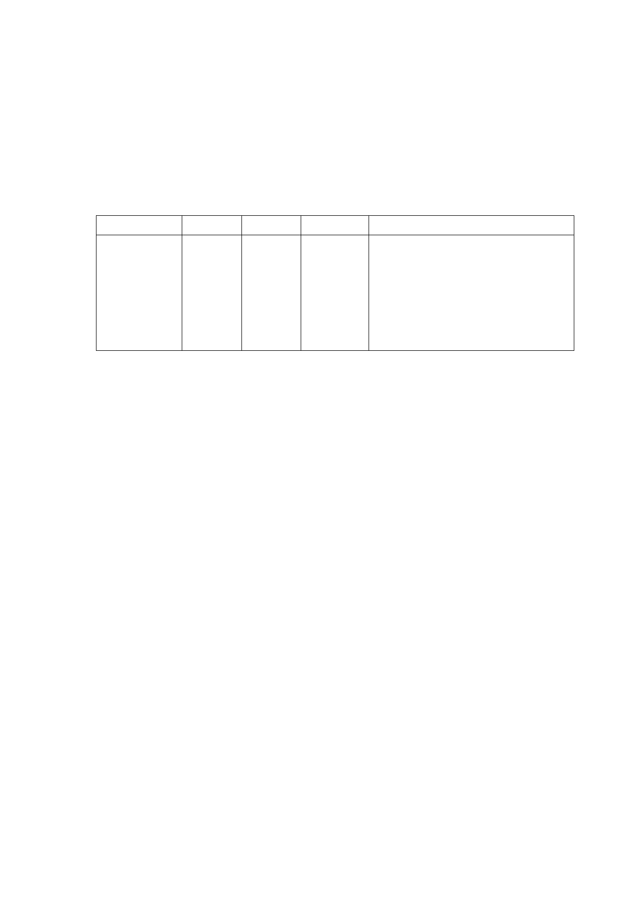

內規劃口袋公園，以達公有土地活化使用、促進地區發展、增
加財稅收入及型塑城市發展願景等目標，經市府檢討認屬重大
政策，爰依都市計畫法第27條第1項第4款辦理本都市計畫變更
案。
三、 計畫內容：
（一） 變更部分第四種商業區為公園用地(面積約 736 m2)。
變更位置 原計畫 新計畫 變更面積
變更理由
臺北市中正
區公園段三
小段 10、11
等 2 筆地號土
地
第四種
商業區
公園
用地
736(m2)
配合市有閒置土地活化利用、提升
使用效率，於計畫區內留設適當之
綠化休閒空間，以提升整體都市環
境品質，爰予以變更分區。其原有
第四種商業區容積則等值調派至東
側文化觀光專用區。
（二） 容積調派
變更為公園用地之部分，其容積調派至文化觀光專用區，
調派後文化觀光專用區之容積率由原560%增加65%，共計
625%。
（三） 土地使用分區管制
文化觀光專用區經容積調派後，其法定容積不得超過
625%。
四、 都市設計管制(有關帶狀式公共開放空間)：
（一） 文化觀光專用區：東側臨中山南路及北側臨忠孝西路，應退
縮 10 公尺帶狀式公共開放空間；另南側臨青島西路部分應
退縮 6 公尺帶狀式公共開放空間；西側(青島西路及中山南
路 2 巷間)則指定留設 3 公尺寬無遮簷人行道。
（二）另中山南路 2 巷兩側之公園用地及部分第四種商業區、以及
臨青島西路側之第四種商業區，應指定留設 3 公尺寬無遮簷
人行道。
五、 本案係市府104年6月11日府都規字第10434204903號函送到會，
- 37 -